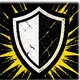
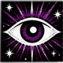
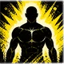
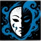
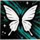

Кэрри
3 Артефактор · Картограф
Калдатар · Мудрец · БМ +2
12КЗ
24Хиты
+2Инициатива
10Пасс. воспр.
30Скорость
Состояния НетКонцентрация —Истощение 0
+2СИЛ
+2ЛОВ
+2ТЕЛ
+1ИНТ
+0МДР
−1ХАР
Входящие
Кэрри · новых нет
Пока тихо — Мастер ещё ничего не прислал.
Передачи
Предметов и монет в пути нет.
Постер персонажа
Скачать постер (PNG)ПоделитьсяМагия
Заклинания и заговоры персонажа
Заговоры 5

Искусство друидовDruidcraft
★Преобразование Действие · ВС · Особое
Леденящее прикосновениеChill Touch
★Некромантия Действие · ВС · Атака ближняя

Меткий ударTrue Strike
★Прорицание Действие · СМ · Атака ближняя
ПочинкаMending
★Преобразование 1 минута · ВСМ · Особое
1 круг 8 · исп. ◼ ◼ ◼

Доспехи магаMage Armor
★Ограждение Действие · ВСМ · Защита

Лечащее словоHealing Word
★Воплощение Бонусное действие · В · Лечение
Направляющий снарядGuiding Bolt
★Воплощение Действие · ВС · Атака дальняя

Огонь фейFaerie Fire
★Воплощение Действие · В · Концентрация